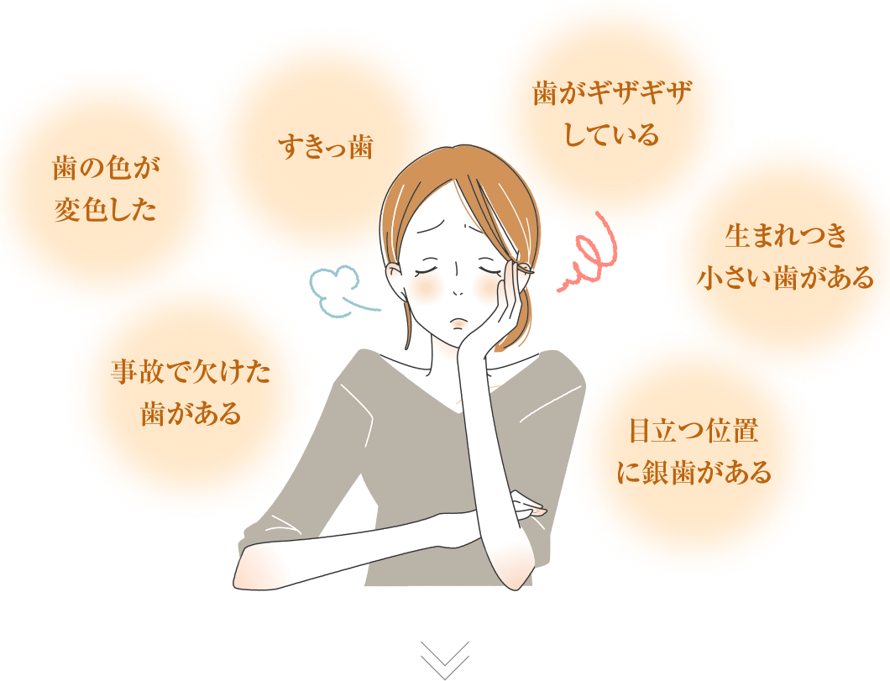

ダイレクトボンディング
03 482 394 123
こんな歯にコンプレックスを抱いていませんか？
ダイレクトボンディングがおすすめです。
ダイレクトボンディングとは
特殊な波長の光の照射で硬化するコンポジットレジン(樹 脂)という材料を歯に塗り修復する治療です。直接お口の中で材料を詰めて、光によって硬化させるので、ほとんどの症例で型取りなど時間を要する工程が不要です。 主に歯と歯の間や咬み合わせの面にできた比較的小さなむし歯の治療に使われますが、歯の形や色をキレイにすることにも応用可能で、見た目も改善することができます。
ご旅行やイベントの直前など
スケジュールに合わせて施術ができます。
ダイレクトボンディングの特徴
自然な白い歯を再現
前歯に隙間がありコンプレックスになっていませんか？
様々な色調をご用意しています
虫歯治療の詰め物は長時間経過することで変色が起きてしまいます。このような変色した詰め物をダイレクトボンディングで再び詰め直し、綺麗な歯にすることができます。
様々な色調が表現できるので、極端に白くなることもなく、周りの歯に合わせた色合いに修復できます。
自然な白い歯を再現
前歯に隙間がありコンプレックスになっていませんか？
隙間を埋める治療
前歯の隙間が気になっている方は多いと思います。比較的小さい隙間でしたら、ダイレクトボンディングで前歯を少し大きくして隙間を埋めることができます。時間がかからず、費用も安く済みます。
欠けてしまった歯の修復
事故など歯に衝撃を受けて欠けてしまった歯はありませんか？
様々な色調をご用意しています
虫歯治療の詰め物は長時間経過することで変色が起きてしまいます。このような変色した詰め物をダイレクトボンディングで再び詰め直し、綺麗な歯にすることができます。 様々な色調が表現できるので、極端に白くなることもなく、周りの歯に合わせた色合いに修復できます。
保険適用のレジンとの違い
虫歯治療の詰め物は長時間経過することで変色が起きてしまいます。このような変色した詰め物をダイレクトボンディングで再び詰め直し、綺麗な歯にすることができます。
様々な色調が表現できるので、極端に白くなることもなく、周りの歯に合わせた色合いに修復できます。
自然な歯並びを再現
生まれつき小さい歯があるので歯並びが乱れていませんか？
歯の形を整える
歯の先端のギザギザや表面の凹凸など、また生まれつき歯の大きさが揃っていない場合にも最適です。 このような歯をダイレクトボンディングで形を整え自然な歯並びを再現できます。
銀歯を白い歯にできる
虫歯の治療をして銀歯になった歯はありませんか？
金属アレルギーも予防
保険診療の範囲では虫歯の治療に金属の詰め物をするケースが多く銀歯になってしまったという方も多いと思います。金属の詰め物を除去し、ダイレクトボンディングで新たに充填すれば白い歯に戻せます。
また、長年銀歯を口に入れていることで金属アレルギーを発症する場合もあるので、金属アレルギー対策にもなります。
ダイレクトボンディングの平均寿命
一般的な保険適用のレジンは、3 年程度で変色することが多いですが、ダイレクトボンディングはハイブリッドセラミックを使用するので、耐久性があり、4~6年程度持つようになっています。
お問い合わせ
患者様のお悩みや不安を取り除きます。お気軽にお問い合わせください。
ContactContact
03-3564-4888
[テキスト] 10:00 ~ 18:00
症例
結婚式が１週間後にあるのでそれまでに前歯のすきっ歯を埋めたい。
Before
After
| 年齢 | 30代 | 年齢 | 女性 |
| 疾患 | 上顎正中離開 | 年齢 | ダイレクトボンディング |
| 治療期間 | 1日（1.5時間） | 年齢 | 4万円（税別） |
| 状況 | 歯科矯正治療で歯の隙間を埋めるのは結婚式に間に合わないので、インターネットで調べたダイレクトボンディング治療で結婚式に間に合わせたい。 | ||
| 治療前 | 歯間空隙（歯と歯の隙間）の一番大きな部分で幅が2㎜程度認められました。治療前の口腔内の見た目の印象は2㎜の歯間空隙が黒く見え、顔貌が少し緩んだイメージに見えました。 | ||
| メリット | 歯を削らずにコンポジットレジン（セラミックスの微細粒子と光をあてると硬化する合成樹脂→レジン、とを混合して作られた材料）を歯と強く接着することができます。また自分の歯の色とコンポジットレジンの色を調和させることができるため、自然な見た目に仕上げることができます。被せ物の治療のように型取りをする必要もないため、治療回数も1回で終わらせることもできます。歯の形にご要望がある場合も対応することが可能です。 | ||
| 治療のリスク・ 副作用 | 色の濃い食べ物や飲み物を日常的に嗜好して飲食をする場合、自分の歯とコンポジットレジンの着色の仕方に差が生じ、特に歯とコンポジットレジンの接着している境目に着色が生じる場合があります。また金属やセラミックスに比べて強度は低く、破折や摩耗の可能性があるため、歯科医院での定期的な確認や調整をお勧めいたします。 | ||
| 治療後 | 治療前に口腔内に認められた歯間空隙による隙間の黒さがなくなり、顔貌が凛としたイメージに見えました。 | ||
結婚式が１週間後にあるのでそれまでに前歯のすきっ歯を埋めたい。

Before

After
| 年齢 | 30代 | 年齢 | 女性 |
| 疾患 | 上顎正中離開 | 年齢 | ダイレクトボンディング |
| 治療期間 | 1日（1.5時間） | 年齢 | 4万円（税別） |
| 状況 | 歯科矯正治療で歯の隙間を埋めるのは結婚式に間に合わないので、インターネットで調べたダイレクトボンディング治療で結婚式に間に合わせたい。 | ||
| 治療前 | 歯間空隙（歯と歯の隙間）の一番大きな部分で幅が2㎜程度認められました。治療前の口腔内の見た目の印象は2㎜の歯間空隙が黒く見え、顔貌が少し緩んだイメージに見えました。 | ||
| メリット | 歯を削らずにコンポジットレジン（セラミックスの微細粒子と光をあてると硬化する合成樹脂→レジン、とを混合して作られた材料）を歯と強く接着することができます。また自分の歯の色とコンポジットレジンの色を調和させることができるため、自然な見た目に仕上げることができます。被せ物の治療のように型取りをする必要もないため、治療回数も1回で終わらせることもできます。歯の形にご要望がある場合も対応することが可能です。 | ||
| 治療のリスク・ 副作用 | 色の濃い食べ物や飲み物を日常的に嗜好して飲食をする場合、自分の歯とコンポジットレジンの着色の仕方に差が生じ、特に歯とコンポジットレジンの接着している境目に着色が生じる場合があります。また金属やセラミックスに比べて強度は低く、破折や摩耗の可能性があるため、歯科医院での定期的な確認や調整をお勧めいたします。 | ||
| 治療後 | 治療前に口腔内に認められた歯間空隙による隙間の黒さがなくなり、顔貌が凛としたイメージに見えました。 | ||
結婚式が１週間後にあるのでそれまでに前歯のすきっ歯を埋めたい。

Before

After
| 年齢 | 30代 | 年齢 | 女性 |
| 疾患 | 上顎正中離開 | 年齢 | ダイレクトボンディング |
| 治療期間 | 1日（1.5時間） | 年齢 | 4万円（税別） |
| 状況 | 歯科矯正治療で歯の隙間を埋めるのは結婚式に間に合わないので、インターネットで調べたダイレクトボンディング治療で結婚式に間に合わせたい。 | ||
| 治療前 | 歯間空隙（歯と歯の隙間）の一番大きな部分で幅が2㎜程度認められました。治療前の口腔内の見た目の印象は2㎜の歯間空隙が黒く見え、顔貌が少し緩んだイメージに見えました。 | ||
| メリット | 歯を削らずにコンポジットレジン（セラミックスの微細粒子と光をあてると硬化する合成樹脂→レジン、とを混合して作られた材料）を歯と強く接着することができます。また自分の歯の色とコンポジットレジンの色を調和させることができるため、自然な見た目に仕上げることができます。被せ物の治療のように型取りをする必要もないため、治療回数も1回で終わらせることもできます。歯の形にご要望がある場合も対応することが可能です。 | ||
| 治療のリスク・ 副作用 | 色の濃い食べ物や飲み物を日常的に嗜好して飲食をする場合、自分の歯とコンポジットレジンの着色の仕方に差が生じ、特に歯とコンポジットレジンの接着している境目に着色が生じる場合があります。また金属やセラミックスに比べて強度は低く、破折や摩耗の可能性があるため、歯科医院での定期的な確認や調整をお勧めいたします。 | ||
| 治療後 | 治療前に口腔内に認められた歯間空隙による隙間の黒さがなくなり、顔貌が凛としたイメージに見えました。 | ||
症例
私たち医療チームにお任せください
Dr.中平を始め、噛み合わせや審美治療などに詳しい医療チームで治療に当たります
カウンセリング
治療前にカウンセリングを行い、患者様に合わせた治療計画をご提案いたします。患者様には、十分にお時間をとっていただき、納得された上で治療を進めさせていただきます。
感染症予防対策
当院では、感染症のリスクを下げるため、使用する器具は必ず、ディスポーザブル材料(使い捨ての器具)か、滅菌したものを使います。 このような歯をダイレクトボンディングで形を整え自然な歯並びを再現できます。
「ESTELITE ASTERIA」を採用
当院で使用するコンポジットレジンは「ESTELITE ASTERIA」を使用しております。 保険適用外の材料となりますが、保険診療で使われる材料と比べると強度と美しさの面で優れており、色調の種類も多く、再現性・耐久性と共に優れているのが特徴です。(使い捨ての器具)か、滅菌したものを使います。 このような歯をダイレクトボンディングで形を整え自然な歯並びを再現できます。
お問い合わせ
患者様のお悩みや不安を取り除きます。お気軽にお問い合わせください。
ContactContact
03-3564-4888
[テキスト] 10:00 ~ 18:00
ダイレクトボンディングのメリットとデメリット
メリット
歯を削る量が少ない
治療が短期間で費用も比較的安価
歯の形や大きさを修正できる
金属不使用なので金属アレルギーになるリスクがない
メリット
歯を削る量が少ない
治療が短期間で費用も比較的安価
歯の形や大きさを修正できる
金属不使用なので金属アレルギーになるリスクがない
当院では、患者様のお悩みや治療に対するご希望を伺い、
より良い治療プランを考えて、ご提案いたします。
治療の流れ
STEP 1
カウンセリング
(診察・診断・レントゲン)
STEP 2
麻酔
((虫歯の範囲に応じて))
STEP 3
歯のクリーニングや
ホワイトニング、
虫歯や、古い詰め物の除去
STEP 4
ダイレクトボンディングに
よる修復
| ダイレクトボンディングの費用 | |
| 小臼歯 | 44000 円 |
| 大臼歯 | 49500 円 |
| クラウン | 99000 円 |
| ベニア | 66000 円 |
| 正中離開 | 110000 円 |
| ブリッジ | 198000 円 |
35 West Dental Street California 1004
東京銀座歯科
〒104-0061 東京都中央区銀座1-7-6銀座河合ビル8Ｆ\n（銀座中央通り沿いキラリトギンザ目の前）
〒104-0061
東京都中央区銀座1-7-6銀座河合ビル8ＦTEL03-3562-7877
03 - 3565 - 4568
03-3564-4888
[テキスト] 10:00 ~ 18:00
ContactContact